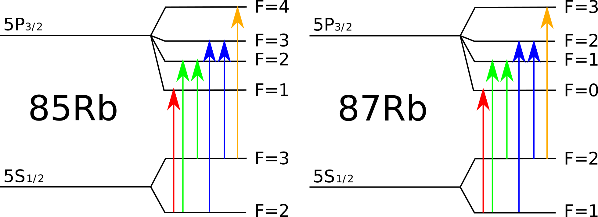
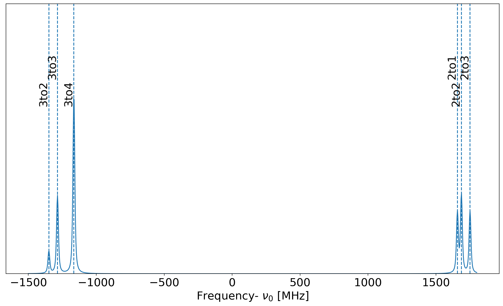
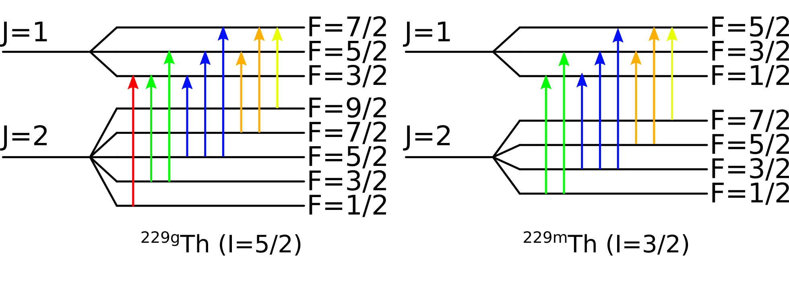

Given an uniform charge distribution inside a sphere of radius \(R\) the charge density is computed as: \[
\rho = \dfrac{Ze}{\frac{4}{3}\pi R^3}
\]
From Gauss’s law the electric field flux outside a closed surface is: \[
\Phi(E) = \dfrac{Q}{\epsilon_0}
\]
where \(Q\) is the charge contained within the surface. Considering the isotropy of the spherical system in exam, the electrical field at distance \(r\) from the sphere center is then computed: \[
\begin{aligned}[c]
\mathbf{r}&\leq\mathbf{R} \\
E(r) &= \dfrac{Q}{4\pi\epsilon_0 r^2}\\
&= \dfrac{\rho \frac{4}{3}\pi r^3}{4\pi\epsilon_0 r^2}\\
&= \dfrac{Ze}{4\pi\epsilon_0} \dfrac{r}{R^3}
\end{aligned}
\qquad \qquad
\begin{aligned}[c]
\mathbf{r}&> \mathbf{R}\\
E(r) &= \dfrac{Q}{4\pi\epsilon_0 r^2}\\
&= \dfrac{Ze}{4\pi\epsilon_0 r^2}\\
& \\
&%
\end{aligned}
\]
The potential difference between two points can be extracted as: \[
\Delta V_{r_1,r_2} = V(r_1)-V(r_2) = - \int_{r_2}^{r_1} E(r) dr
\]
The potential energy is obtained by multiplying above equations by \(-e\), hence: \[
\begin{aligned}[c]
\mathbf{r}&\leq\mathbf{R} \\
U(r) &= -\dfrac{Ze^2}{4\pi\epsilon_0 R}\left( \dfrac{3}{2} - \dfrac{r^2}{2R^2}\right)
\end{aligned}
\qquad \qquad
\begin{aligned}[c]
\mathbf{r}&> \mathbf{R}\\
U(r) &= -\dfrac{Ze^2}{4\pi\epsilon_0 r}
\end{aligned}
\]
b
One wants to show that \[
\Delta E = \frac{4\pi}{10} \mid \Psi(0)\mid^2\frac{Ze^2}{4\pi \epsilon_0}R^2\\
\] Using the derived potentials of point (a) and the following equation for the energy perturbation \[
\Delta E = \int_{0}^{\infty} \Psi^*(V(r)-V_0(r))\Psi\cdot 4\pi r^2 dr
\] Hence, using the “allowed wavefunction” approximation, \(\Psi(0) \sim \Psi(r)\): \[
\Delta E = \mid\Psi(0)\mid^2 \cdot \int_{0}^{\infty} (V(r)-V_0(r))\cdot 4\pi r^2 dr\\
\]
Splitting the integral one has
\[
\Delta E = \mid\Psi(0)\mid^2 (\int_{0}^{R} (V(r)-V_0(r))\cdot 4\pi r^2 dr
+ \int_{R}^{\infty} (V(r)-V_0(r))\cdot 4\pi r^2 dr)
\] For \(r>R\), \(V(r)=V_0(r)\) canceling out the second term. Substituting the expressions of the potential energy, the energy perturbation is then \[
\Delta E = -\dfrac{Ze^2}{4\pi\epsilon_0} \mid\Psi(0)\mid^2 4\pi\left[\int_{0}^{R} \frac{3}{2R} \cdot r^2 dr-\int_{0}^{R} \dfrac{r^2}{2R^3}\cdot r^2 dr -\int_{0}^{R} \frac{1}{r} \cdot r^2 dr\right]
\]\[
\Delta E = -\dfrac{Ze^2}{4\pi\epsilon_0} \mid\Psi(0)\mid^2 4\pi\left[ \frac{3}{2R}\cdot \frac{R^3}{3}-\dfrac{1}{2R^3}\cdot \frac{R^5}{5} - \frac{R^2}{2}\right]
\] And finally, \[
\Delta E = \frac{Ze^2}{4\pi \epsilon_0} \mid \Psi(0)\mid^2\frac{4\pi}{10}R^2\\
\]
Problem 2
a
From the wave numbers \(k\) in \(\text{cm}^{-1}\) given for the 2 J states involved of the considered D2 transition, one can give the transition in nm unit, using the wavelength \(\lambda\) : \[
\Delta \lambda=\frac{2\pi}{\Delta k}=\frac{2\pi}{12816.55\times 10^{7}}=780.2412 \ \text{nm}
\] One can also give the transition in THz using the frequency \(\nu\) : \[
\Delta \nu=\frac{\text{c}}{\Delta \lambda}=384.2305 \ \text{THz}
\]
b
The lifetime of the considered excited state is \(\tau=26.2\) ns. The spontaneous decay rate \(A\) can then be deduced knowing : \[
A=\frac{1}{\tau}=\frac{1}{26.2\times 10^{-9}}=3.817\times10^7 \ \text{s}^{-1}
\] The Einstein coefficient \(A\) is a measure of the relative intensity of the spectral line. The natural linewidth of the emitted radiation can be calculated as: \[
\Gamma=\frac{A}{2\pi} \sim 6.078 \ \text{MHz}
\]
c
The states are further split into hyperfine \(F\) states following the coupling of the atomic \(J\) spins with the nuclear spin \(I\). The \(F\) states are then \(\mid I-J \mid\leq F \leq I+J\). Considering first the ground state \(S_{1/2}\) of the D2 transition, in case of \(^{85}\text{Rb}\) the nuclear spin is \(I=5/2\) which gives \(F=[2,3]\). In case of \(^{87}\text{Rb}\) the nuclear spin is \(I=3/2\) which gives \(F=[1,2]\). Considering then the excited state \(P_{3/2}\) of the D2 transition, in case of \(^{85}\text{Rb}\) the \(F\) states are \(F=[1,2,3,4]\). In case of \(^{87}\text{Rb}\) the \(F\) states are \(F=[0,1,2,3]\).
The possible electric dipole transitions which are allowed are given by the selection rules which are \[\Delta F=0,\pm1 \]\[F=0 \not\to F=0\] The possible electric dipole transitions are displayed for both \(^{85}\text{Rb}\) and \(^{87}\text{Rb}\).

HFS of \(^{85}\text{Rb}\) and \(^{87}\text{Rb}\)
d
Code
from IPython.display import Markdownfrom tabulate import tabulateA = [1012, 25.002] # MHzB = [0,25.790] # MHzI =5/2J = [1/2,3/2]# dictionary containing HF shiftsF_up = {1:0,2:0,3:0,4:0}F_low = {2:0,3:0}table = []# compute energy shift for each HF componentfor f in F_low.keys(): k = f*(f+1)-I*(I+1)-J[0]*(J[0]+1)try: B_coeff = (3*0.5*k*(k+1)-2*I*(I+1)*J[0]*(J[0]+1))/(2*I*(2*I-1)*2*J[0]*(2*J[0]-1))except: B_coeff =0 dE =0.5*A[0]*k + B[0]*B_coeff F_low[f] = dE table.append([f,dE*1e-3])Markdown(tabulate( table, headers=["F", "$\Delta E_{hfs}$ [GHz]"]))
Table 1: Energy shifts with respect to the unperturbed position computed for the ground \(S_{1/2}\) state of \(^{85}\text{Rb}\)
F
\(\Delta E_{hfs}\) [GHz]
2
-1.771
3
1.265
Code
table=[]for f in F_up.keys(): k = f*(f+1)-I*(I+1)-J[1]*(J[1]+1)try: B_coeff = (3*0.5*k*(k+1)-2*I*(I+1)*J[1]*(J[1]+1))/(2*I*(2*I-1)*2*J[1]*(2*J[1]-1))except: B_coeff =0 dE =0.5*A[1]*k + B[1]*B_coeff F_up[f] = dE table.append([f,dE])Markdown(tabulate( table, headers=["F", "$\Delta E_{hfs}$ [MHz]"]))
Table 2: Energy shifts with respect to the unperturbed position computed for the excited \(P_{3/2}\) state of \(^{85}\text{Rb}\)
F
\(\Delta E_{hfs}\) [MHz]
1
-113.208
2
-83.8355
3
-20.435
4
100.205
Using the HFS shifts presented in previous tables the HFS positions of the allowed transition can be computed as: \[
\gamma = \nu_0+\Delta E_{\text{hfs}}^{P_{3/2}}-\Delta E_{\text{hfs}}^{S_{1/2}}
\]
Table 3: Atomic resonance positions in MHz with respect to the unperturbed resonance frequency \(\nu_0\) for the allowed hyperfine transitions of \(^{85}\text{Rb}\)
\(F_{S_{1/2}} \rightarrow F_{S_{1/2}}\)
\(\gamma - \nu_0\) [MHz]
2 \(\rightarrow\) 1
1657.79
2 \(\rightarrow\) 2
1687.16
2 \(\rightarrow\) 3
1750.57
3 \(\rightarrow\) 2
-1348.84
3 \(\rightarrow\) 3
-1285.43
3 \(\rightarrow\) 4
-1164.8
Code
import satlas2 as sat import matplotlib.pyplot as pltimport numpy as npsize =20plt.rcParams['font.size']=size#build an hfs model with racah intensitiesHFS_model = sat.HFS(I=I, J=J, df=0, fwhml=10,fwhmg=10, A=A, B=B, scale=1, name='HFS', racah=True)fig, axs= plt.subplots(figsize=(16,9), dpi=100)x = np.linspace(-1500, 1800, 1000)#plot hfs modelaxs.plot(x,HFS_model.f(x))#mark the different transitionsyy=1for T in ftof: delta = F_up[T[1]]-F_low[T[0]] label =str(T[0])+"to"+str(T[1])if yy ==1: yy =1.15else: yy =1 axs.text(delta,y=yy,horizontalalignment='right',verticalalignment='center',rotation=90,s=label) axs.axvline(delta,linestyle='dashed')axs.set_yticks([])axs.set_xlabel(r"Frequency- $\nu_0$ [MHz]")axs.set_ylim(0,1.5)plt.show()
/home/andrea/.local/lib/python3.9/site-packages/satlas2/models/hfsModel.py:292: RuntimeWarning: invalid value encountered in double_scalars
shift = phase * n / d

Figure 1: Atomic resonance peak positions in MHz with respect to the unperturbed resonance frequency \(\nu_0\) for the allowed hyperfine transitions of \(^{85}\text{Rb}\)
Problem 3
a
The mass shift can be splitted in two components: \[
\delta \nu_{MS} = \delta \nu_{NMS} + \delta \nu_{SMS} = \dfrac{A^\prime - A}{A^\prime A} \left(\text{NMS} + \text{SMS} \right)
\]
The Normal Mass Shift NMS, due to the finite nuclear mass, is given in GHz.amu by : \[
\text{ NMS} =\frac{m_e}{m_u}\nu_0
\] with \(\frac{m_e}{m_u}\) is the mass of the electron in amu and \(\nu_0=\frac{\text{c}}{\lambda}\) in GHz where the wavelength of the transition is \(\lambda=363.6\) nm. Hence, \[
\text{NMS}=(5.4858\times 10^{-4}) \times (825.0825\times 10^{-3})=452.5578 \ \text{GHz}.\text{amu}
\] The Specific Mass Shift SMS is related to the correlated pairs of electron momenta. There is no analytical expression and the calculation is difficult, in fact it is only calculable for 2- and 3-electron systems. SMS is usually evaluated by experiment using evaluations of nuclear size changes independent from optical data (for example electron scattering, muonic x-rays, electronic K xrays, etc – generally all on stable atoms however!). From the Mass shift factor MS one can deduce the SMS in GHz.amu, using: \[
\text{SMS}=\text{MS}-\text{NMS}= 845-425.5578=392.4422 \ \text{GHz}.\text{amu}
\]
b
Using the given formula which defines isotopic shift: \[
\delta \nu_{i}^{A_{ref},A}= \dfrac{m_A-m_{A_{ref}}}{m_A m_{A_{ref}}}M_i + F_i \delta\langle r^2\rangle^{A_{ref},A}
\] the mean-square charge radii can be computed: \[
\delta\langle r^2\rangle^{A_{ref},A} = \frac{1}{F_i} \left(\delta \nu_{i}^{A_{ref},A} - \dfrac{m_A-m_{A_{ref}}}{m_A m_{A_{ref}}}M_i \right)
\]
Figure 2: Mean-square charge radii computed for Pd isotopes as a function of neutrons number.
Problem 4
a

HFS of \(^{229g}\text{Th}\) and \(^{229m}\text{Th}\)
b
Using the given relations: \[
\begin{aligned}[c]
\dfrac{A}{A_{ref}}\sim \dfrac{\mu\ I_{ref}}{\mu_{ref}\ I}
\end{aligned}
\qquad \qquad
\begin{aligned}[c]
\dfrac{B}{B_{ref}}\sim \dfrac{Q_s}{Q_{s,ref}}
\end{aligned}
\] the magnetic moment and electric quadrupole moment of the isomeric state can be extracted as: \[
\begin{aligned}[c]
\dfrac{A_{iso}}{A_{gs}}&\sim \dfrac{\mu_{iso}\ I_{gs}}{\mu_{gs}\ I_{iso}}\\
\mu_{iso} &\sim \dfrac{A_{iso}}{A_{gs}} \dfrac{I_{iso}}{I_{gs}} \mu_{gs} = 0.371 \mu_{\text{n}}
\end{aligned}
\qquad \qquad
\begin{aligned}[c]
\dfrac{B_{iso}}{B_{gs}}&\sim \dfrac{Q_{s,iso}}{Q_{s,gs}}\\
Q_{s,iso} &\sim \dfrac{B_{iso}}{B_{gs}}Q_{s,gs} = 1.75 \text{eb}
\end{aligned}
\] The A and B factor of the g.s. and isomeric states where chosen from the 20711 cm\(^{-1}\) level.
c
In the case of strongly deformed nuclei the following relation is valid: \[
Q_s = \dfrac{3K^2 - I(I+1)}{(I+1)(2I+3)}Q_0
\] where \(K\) is the projection of the nuclear spin on the symmetry axis. In the states considered in particular K is equal to I.
The two values are in good agreement, this means that the nuclear charge distribution has a similar shape (prolate) in both the configurations.
d
Assuming a negligible mass shift contribution the mean-square charge radii deviation can be computed as: \[
\delta \langle r^2\rangle^{1,2} \sim \dfrac{\delta \nu^{1,2}}{F}
\] Knowing the ratio between isomer to isotope shifts, the isomeric mean-square charge radii shift can be computed as: \[
\delta \langle r^2\rangle^{229m,229} = \delta \langle r^2\rangle^{229,232} \dfrac{\delta \nu^{229m,229}}{\delta \nu^{229,232}} = 0.012\ \text{fm}^2
\]